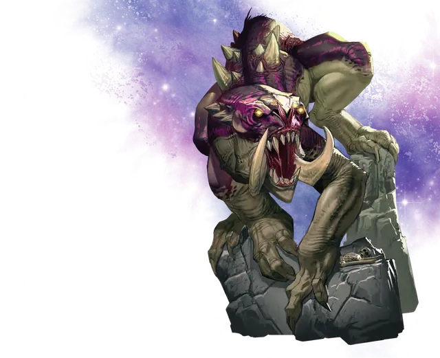

Кошмарная бестия
Nightmare Beast
Громадный Монстр, хаотично-злой

Класс Доспеха 17 (природный доспех)
Хиты 232 (15к20 + 75)
Скорость 30 футов, лазая 30 футов
| мод | спас | ||
|---|---|---|---|
| СИЛ | 26 | +8 | +8 |
| ЛОВ | 10 | +0 | +0 |
| ТЕЛ | 21 | +5 | +5 |
| мод | спас | ||
|---|---|---|---|
| ИНТ | 9 | −1 | −1 |
| МДР | 12 | +1 | +1 |
| ХАР | 15 | +2 | +2 |
Чувства тёмное зрение 120 футов, пассивное Восприятие 11
Языки Понимает языки своего создателя, но не может говорить
Опасность 16 (15000 опыта)
Бонус мастерства +5
Особенности
Легендарное сопротивление (2/день). Если бестия проваливает спасбросок, он может вместо этого сделать спасбросок успешным.
Осадное чудовище. Бестия наносит двойной урон объектам и сооружениям.
Действия
Мультиатака. Бестия совершает две атаки Когтями и одну Бивнем.
Когти. . Рукопашная атака оружием: +13 к попаданию, досягаемость 15 фт., одна цель. Попадание: 14 (1к12 + 8) рубящего урона, и если цель - существо, оно должно преуспеть в спасброске Силы Сл 21, иначе будет сбито с ног.
Бивень. . Рукопашная атака оружием: +13 к попаданию, досягаемость 15 фт., одна цель. Попадание: 17 (2к8 + 8) рубящего урона.
Расщепляющий взгляд (Перезарядка 5-6). Бестия нацеливается на существо, которое может видеть в пределах 60 футов. Цель должна совершить спасбросок Телосложения Сл 18, получая 70 (10к6 + 40) урона силовым полем при провале или половину этого урона при успехе. Если при этом хиты цели уменьшаются до 0, она распадается, оставляя после себя лишь кучку пепла и любое несомое и носимое снаряжение.
Бонусные действия
Телепортация (2/день). Бестия волшебным образом телепортируется вместе с любым снаряжением. которое она носит или несёт, на расстояние до 120 футов в видимое ей свободное пространство.
Легендарные действия
Бестия может совершить 3 легендарных действия, на выбор из представленных ниже вариантов. За один раз можно использовать только одно легендарное действие, и только в конце хода другого существа. Бестия восстанавливает использованные легендарные действия в начале своего хода.
Атака бивнем. Бестия совершает одну атаку Бивнем.
Рывок (стоит 2 действия). Бестия перемещается на свою скорость не провоцируя атак, после чего совершает две атаки Бивнем.
Пугающий вой (стоит 2 действия). Бестия взвывает, выдыхая 120-футовым конусом облако волшебного газа наводящего страх. Любое существо в этой области должно преуспеть в спасброске Мудрости Сл 18, иначе станет испуганным бестией на 1 минуту. Существо может повторить спасбросок в конце каждого своего хода, оканчивая на себе эффект в случае успеха.
Описание
Кошмарные бестии - это огромные четвероногие звери, вырастающие до 20 футов высотой в холке или до 40 футов, когда встают на задние лапы.
Когтистые лапы кошмарной бестии позволяет ей хорошо лазать, несмотря на свои размеры. Шкура толстая, жесткая, зубы длинные и острые. Пара изогнутых бивней торчат по краям пасти, а большие красные глаза бестии светятся в темноте. Существо с легкостью разрушает сооружения и укрепления, и не колеблясь, разрывает врагов когтями и насаживает на бивни, но самая разрушительная атака - это магическая способность уничтожать врагов одним только взглядом.
Кошмарных бестий создают могущественные заклинатели и они служат им живыми осадными машинами. Один единственный такой зверь может разгромить целые города и армии.